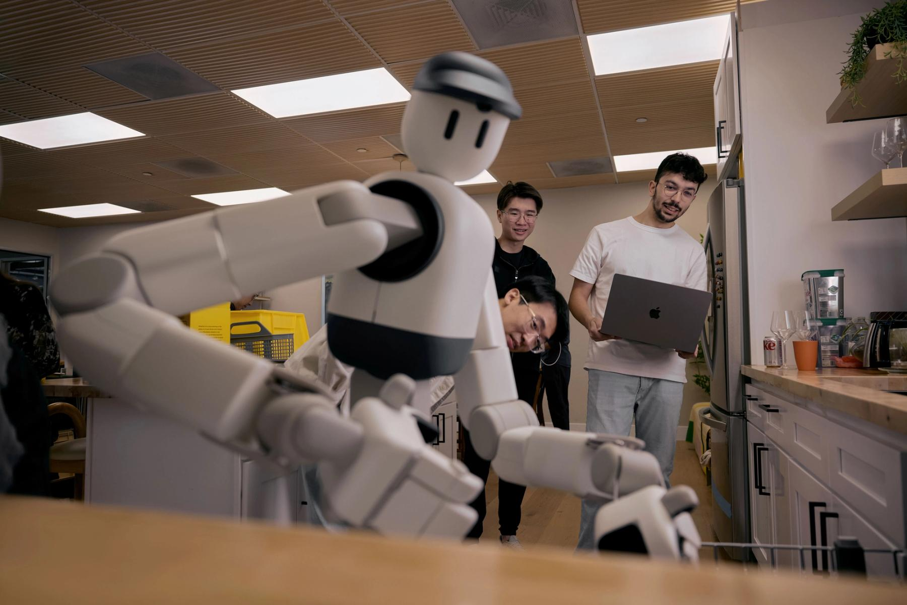
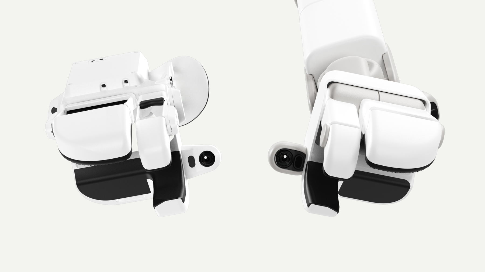
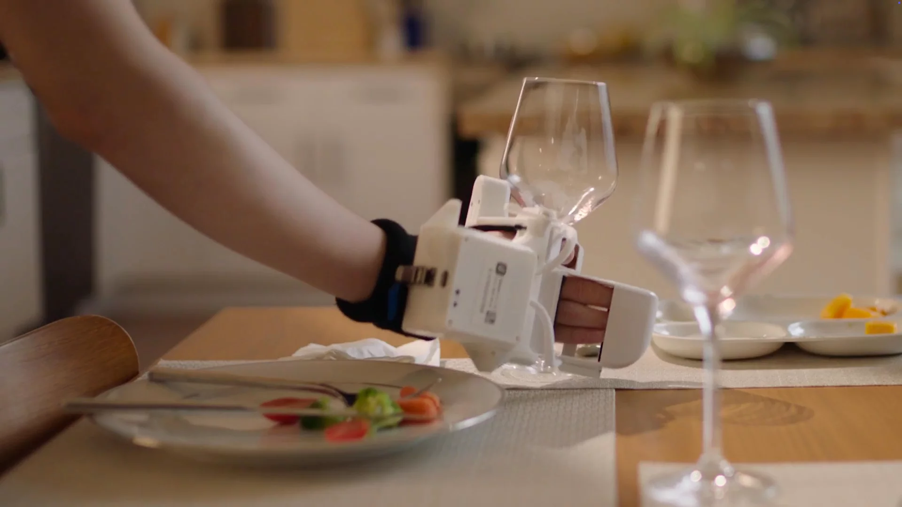
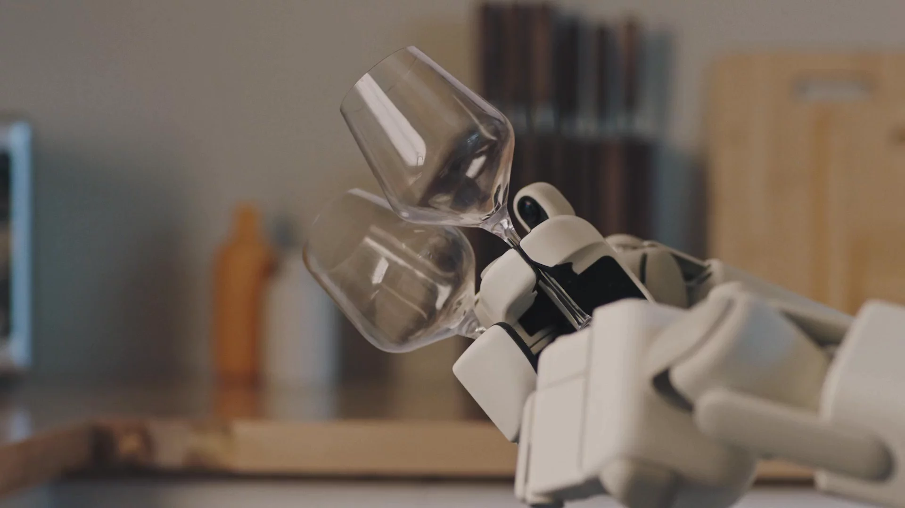

Technical Blog · Human Data · Cross-Embodiment
ACT-1：所谓 Zero Robot Data，真正解决的是具身映射
Sunday Robotics 的路线不是让普通人类视频直接监督机器人，而是把采集硬件、机器人手和数据变换系统一起设计，使“人做出的动作”先变成几何、传感和视觉上都像机器人执行的轨迹，再训练 ACT-1。

0. 一句话结论 #
ACT-1 试图绕开昂贵的机器人遥操作数据：用与机器人手共享几何和传感布局的 Skill Capture Glove 采人类操作，再用 Skill Transform 把人体运动与视觉外观转换到 Memo 的观测-动作域；收益是更快覆盖真实家庭的长尾，代价是必须把硬件设计、标定和视觉变换做成一套封闭系统，而且公开文章没有给出模型、数据规模或标准化评测。
核心不是“人类数据比机器人数据多”，而是先让 source embodiment 和 target embodiment 接近到足以共享动作语义。Sunday 不是只训练一个更强的 retargeter，而是重新设计采集手套和机器人手，主动降低 retargeting 问题的难度。
1. 论文定位：这是数据系统发布，不是完整模型论文 #
ACT-1 的公开材料主要证明三类系统能力：超长程移动操作、未见家庭泛化和精细灵巧操作。它没有披露网络结构、参数量、action representation、loss、训练步数或数据规模，所以不能像 VLA 技术报告那样复原模型。可确认的创新集中在数据入口：
| 路线 | 采集对象 | 跨具身处理 | 瓶颈 |
|---|---|---|---|
| 机器人遥操作 | 目标机器人动作 | 天然对齐 | 设备占用、采集慢、场景难扩展 |
| 普通人类视频 | RGB 中的人手活动 | 需推断动作与机器人可达性 | 缺少控制量、视觉/动力学差距大 |
| ACT-1 | 传感化手套 + 人类执行 | 硬件同构 + Skill Transform | 专有采集设备和机器人共同设计成本高 |
因此，“zero robot data”更精确的含义是：官方声称 ACT-1 的训练没有使用机器人 teleoperation trajectory。它并不意味着零机器人硬件、零机器人传感标定、零目标域视觉模型或零真机验证。
2. 方法总览：先缩小 embodiment gap，再学习 policy #
human performs household task
-> Skill Capture Glove records hand pose / sensors / egocentric observation
-> shared glove-hand geometry preserves grasp semantics
-> Skill Transform retargets body kinematics to Memo
-> Skill Transform removes human appearance from visual observations
-> robot-like observation-action trajectory
-> ACT-1 foundation-policy training
-> observation + task / map context
-> whole-body navigation and dexterous action
3. 四个关键设计 #
3.1 Hardware co-design：把算法难题改成机械设计问题
旧方法为什么不行：人手自由度、关节布局、接触面和机器人手不同，即使恢复出准确人手姿态，也不保证存在语义等价的机器人动作。
它怎么改：让手套和 Memo 手共享几何与传感器布局。采集者不是“假装自己是任意机器人”，而是在佩戴与目标末端结构一致的接口。
为什么有效：抓杯柄、拉绳、扣住工具等接触模式能在 source/target 两端保持同样的手指拓扑。retargeting 主要剩下尺度、手臂长度和基座运动，而不是重新求解抓取语义。
代价：数据价值绑定特定硬件家族；机器人手升级会改变数据接口。文章没有报告关节标定误差、触觉/力传感通道或手套自由度，均为【不确定】。
3.2 Skill Transform：同时做 kinematic 与 visual alignment
官方称 Skill Transform 会将原始人类观测转换成“看起来和运动起来都像机器人生成”的数据，并报告 90% 的转换成功率。可以用一个抽象映射描述：
$I^h$ 是含人体外观的观测，$q^h$ 是手套/人体运动，$c$ 是传感信号；输出是 robot-view 图像、机器人动作和状态。这个公式是对文章机制的工程抽象，不是官方公布的训练公式。

【不确定】“90% success”没有定义分母和通过标准。合理解释包括：轨迹可完成转换、视觉重建质量通过审核，或变换后机器人可重放。需要公开 failure taxonomy、人工验收协议和变换前后 action consistency 才能判断。
3.3 Map-conditioned navigation：把未知房型变成已知输入
ACT-1 在未见 Airbnb 家庭中并非完全无先验探索。部署时提供环境 3D map，训练中也让模型接触大量家庭布局，因此 policy 学的是“读地图去找桌子/洗碗机”，而不是记住训练房间：
$m_{3D}$ 把全局几何从隐式记忆变成显式条件。这样能分离两个问题：地图负责 room-scale localization，视觉动作模型负责局部抓取和操作。文章没有说明地图如何构建、地标如何语义化以及全局/局部 planner 是否独立存在。
3.4 Whole-body action：一个系统覆盖毫米到米
Table-to-Dishwasher 同时需要毫米级杯具插入、双手协调、躯干伸展和超过 130 英尺的移动。Sunday 把它描述为单一 end-to-end foundation model，但没有披露是否存在分层 skill selector、导航 controller 或安全状态机。因此“single model”应理解为统一学习系统的产品边界，不能据此断言所有频率的 action 都由一个同频率 decoder 直接输出。
4. 训练与推理：能确认的边界 #
| 阶段 | 已公开 | 未公开 |
|---|---|---|
| 采集 | 人佩戴 Skill Capture Glove，在真实家庭完成任务 | 数据小时数、场景数、采样频率、隐私过滤 |
| 转换 | 运动与视觉都映射到 Memo 域；声称 90% 成功 | 模型、loss、人工审核、失败处理 |
| 训练 | ACT-1 使用转换后数据，未使用机器人遥操作轨迹 | architecture、token、action chunk、optimizer |
| 推理 | 任务可含 3D map，执行 whole-body mobile manipulation | history、memory、replan、控制频率、安全接管 |
5. 从实现角度看，真正要对齐哪些张量 #
虽然代码未公开，但任何同类系统至少要生成以下训练记录：
trajectory = {
observation_rgb: [T, V, H, W, 3],
robot_state: [T, D_state],
hand_action: [T, D_hand],
arm_action: [T, D_arm],
base_action: [T, D_base],
map_context: [N_map, D_map],
validity_mask: [T, D_action],
transform_score: [T] or [1]
}最容易被宣传语掩盖的是 $\text{validity\_mask}$ 与 $\text{transform\_score}$：变换失败、遮挡、人体穿模、机器人不可达和接触不一致的片段不能与高质量数据同权训练。ACT-1 是否显式保存这些字段，文章没有说明。
6. 训练-推理不一致 #
| Mismatch | Sunday 的处理 | 剩余问题 |
|---|---|---|
| 人类运动学 → Memo 运动学 | 同构手 + Skill Transform | 手臂长度、基座、动力学与延迟仍不同 |
| 人类外观 → robot-view | 视觉变换移除 human-specific details | 生成伪影可能成为训练 shortcut |
| 人类成功轨迹 → policy 自身状态 | 未说明 | closed-loop compounding error 与恢复数据 |
| 训练房型 → 新家庭 | 3D map conditioning | 地图误差、动态障碍、未知语义地标 |
| 示范分布 → 家庭长尾 | 便携采集扩大真实家庭覆盖 | 采集者行为偏差与安全过滤 |
7. 证据复盘：能力演示很强，科学归因仍弱 #
Table-to-Dishwasher
官方报告一次完整任务包含 33 种、68 次灵巧交互，涉及 21 个物体并导航超过 130 英尺。它证明系统可以长时间串联导航、抓取、倾倒、开关门和按键，但没有成功率、试验次数、干预规则或失败分布，因此应视为系统 capability demonstration，而不是统计 benchmark。

未见家庭与灵巧任务
Airbnb 演示说明 map-conditioned policy 能迁移到新房型；袜子折叠和意式咖啡展示了柔性物体、双手协调、工具使用与高扭矩动作。不过这些结果没有与 teleoperation、普通 human video 或 ablated Skill Transform 对照，也没有报告 transform 数据量。最关键的因果问题仍未回答：增益来自手套同构、视觉转换、数据规模，还是 Memo 硬件本身？
8. 可复现清单 #
- 公开 glove 与 robot hand 的 joint topology、range、sensor channels 和标定误差。
- 给出人体 arm/base 到 Memo whole-body action 的 retargeting objective。
- 说明视觉转换模型、遮挡处理、时序一致性和质量评分。
- 报告数据小时数、任务/家庭分布、采集者数量和 train/test split。
- 定义 90% transform success，并发布 failure taxonomy。
- 披露 ACT-1 architecture、action horizon、history、map encoder 与训练目标。
- 报告长程任务的成功率、人工干预、安全停止和平均完成时间。
- 做 raw human、kinematic-only、visual-only、full transform 四组消融。
9. 可继续改进的方向 #
| 改动 | 收益 | 风险 | 验证 |
|---|---|---|---|
| transform uncertainty 进入 loss | 降低伪标签污染 | 过滤后数据多样性下降 | 硬阈值、soft weight、无权重对照 |
| 加入 robot closed-loop failure data | 补足人类成功轨迹没有的恢复状态 | 破坏 zero-robot-data 叙事 | 不同失败数据比例的 OOD 成功率 |
| 学习 embodiment adapter | 扩展到不同手型与机器人 | 重新引入跨拓扑映射难题 | leave-one-hand-out transfer |
| map memory 与局部 policy 解耦 | 更清晰处理长程导航 | 系统复杂度与错误接口增加 | 地图噪声、地标缺失和动态障碍压力测试 |
10. 速读备忘卡 #
- ACT-1 的主要贡献是 data engine，不是已公开的新模型结构。
- “Zero Robot Data”指没有机器人遥操作轨迹，不能扩写成零机器人先验。
- Skill Capture Glove 与 Memo 手共享几何和传感布局。
- 硬件同构把手部 retargeting 从跨拓扑问题降成同接口映射。
- Skill Transform 同时处理运动学与视觉域差距。
- 官方声称 90% transform success，但没有定义指标。
- 新家庭泛化依赖部署时提供的 3D map。
- Table-to-Dishwasher 是长程系统演示，不是有置信区间的 benchmark。
- 文章没有公开数据规模、模型、loss、代码或权重。
- 最值得复用的 insight：先用硬件设计降低 embodiment gap，再谈数据规模。